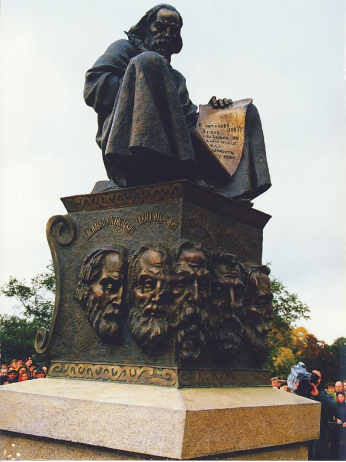
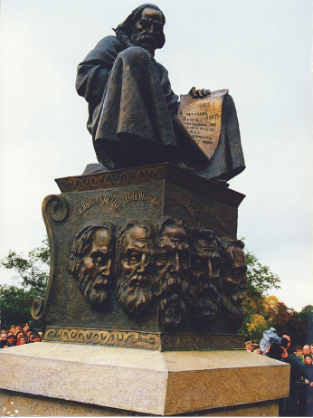

Памятник Любечкому съезду князей. Памятник скульптора Геннадия Ершова, расположенный в
Любече на берегу Днепра (Украина, 1997 г.)
- Вам предлагается делать выбор из трех или двух вариантов ответов после каждого хода, от которого будет зависеть судьба Вашего героя и князя, за которым Вы стоите.
- Наиболее успешный выбор даст дружиннику большее количество очков и трофеи, которые влияют на конечный результат борьбы за княжеский стол.
- Выбирайте с умом, некоторые варианты ответа могут привести Вас и Вашего князя к гибели или бесславному окончанию путешествия.
- Цель игры - стать влиятельным боярином.
- В конце Вы получаете карточку, описывающую Вашу судьбу.